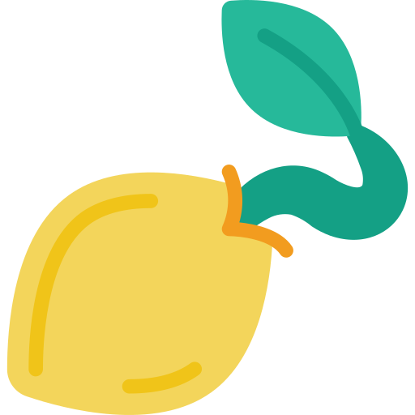
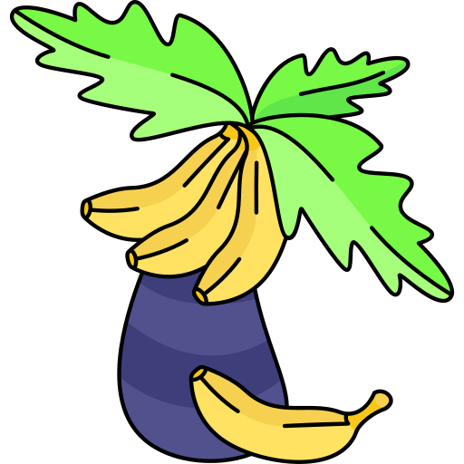

Plongez dans le monde fascinant des plantes
Comment les plantes ont-elles conquises la terre?
De l’eau aux forêts, Des premières algues aux plantes à fleur, partez à la découverte des transformations qui ont permis aux plantes de conquérir la Terre.
COMMENCER À DECOUVRIRDÉCOUVIR
Découvrez les grandes étapes de l'histoire des plantes
Suivez leur histoire en images, puis explorez chaque groupe pour découvrir comment les plantes grandissent, se reproduisent et s’adaptent à leur environnement.

Cuticule,Stomates,Rizhoîdes Environ 470 milliards d’années à l’ére Ordovocien
Les Mousses
Découvrir →

Pollen, Graine nue, Graine Environ 370 milliards d’années à l’ére Dévonien
Les Conifères
Découvrir →

2-VUE D'ENSEMBLE
L’histoire des grandes innovations du monde végétal
Cette frise simplifie l’histoire des plantes : leur évolution suit plusieurs lignées ramifiées, et non une progression unique.
Premières formes végétales
Dans l’eau, elles captent la lumière pour fabriquer leur nourriture
.png)
La conquête des terres émergées
Des protections apparaissent pour éviter aux plantes de se dessécher hors de l’eau.
Des tuyaux pour grandir
Des conduits transportent l’eau et les nutriments

Graines et Pollen
ils aident les plantes à se reproduire et à protégereurs futures pousses, même loin de l’eau

Fleurs et fruits
Les fleurs favorisent la pollinisation et les fruits aident les graines à voyager
3 — Deux voies vers une nouvelle vie
Avec ou sans graines, les plantes savent se multiplier.
Reproduction sexuée
Deux cellules reproductrices, appelées gamètes, s’unissent. Leur rencontre crée une nouvelle plante avec une combinaison de caractères différente. Chez les plantes à graines, le pollen aide à rejoindre l’ovule. Après cette rencontre, une graine peut se former.
Reproduction asexuée
Une plante peut en produire une nouvelle toute seule, sans graine ni rencontre de cellules reproductrices. Le fraisier se multiplie grâce à ses stolons, l’oignon et la tulipe grâce à leurs bulbes, le gingembre grâce à ses rhizomes, et le manioc grâce à des morceaux de tige replantés. La pomme de terre se multiplie grâce à ses tubercules.